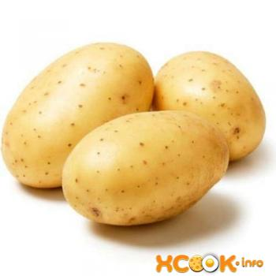

Картофель – клубненосные растения рода паслен. Родиной этого овоща считается Южная Америка,
кстати, именно там его еще можно встретить дикорастущим.
История о том, что на территорию России картофель завез царь Перт I, достаточно известная.
На данный момент овощ распространен практически во всем мире, но больше всего его выращивают
в Китае.